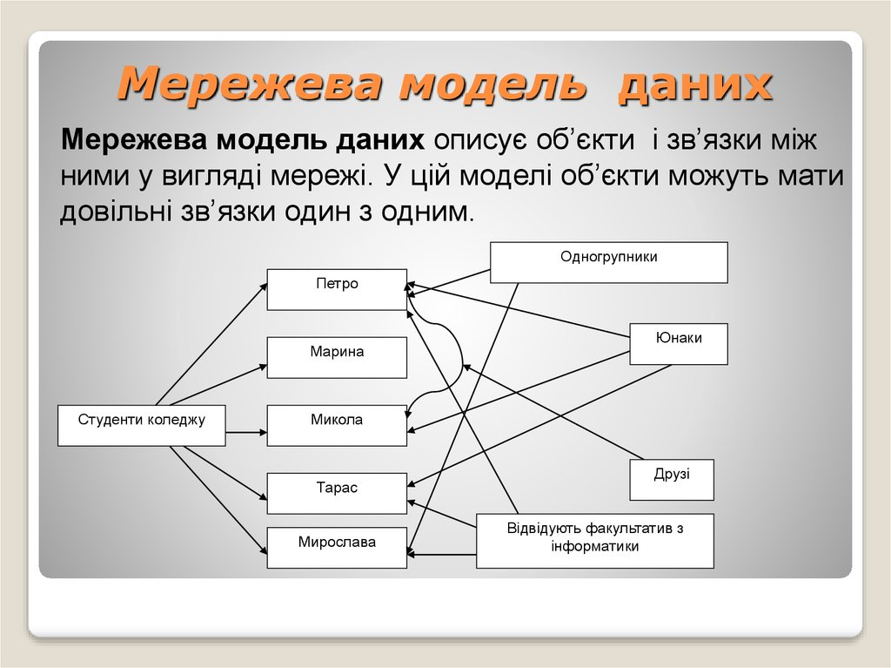

Мережева модель даних — логічна модель даних, що є розширенням ієрархічного підходу, сувора математична теорія, що описує структурний аспект, аспект цілісності і аспект обробки даних в мережевих базах даних. Різниця між ієрархічною моделлю даних і мережевою полягає в тому, що в ієрархічних структурах запис-нащадок повинен мати в тільки одного предка, а в мережевій структурі даних у нащадка може бути будь-яке число предків. Мережева БД складається з набору екземплярів певного типу запису і набору екземплярів певного типу зв'язків між цими записами. Тип зв'язку визначається для двох типів запису: предка і нащадка. Екземпляр типу зв'язку складається з одного екземпляру типу запису предка і впорядкованого набору екземплярів типу запису нащадка. Для даного типу зв'язку L з типом запису предка P і типом запису нащадка C повинні виконуватися наступні дві умови: кожен екземпляр типу запису P є предком тільки в одному екземплярі типу зв'язку L; кожен екземпляр типу запису C є нащадком не більше, ніж в одному екземплярі типу зв'язку L;
